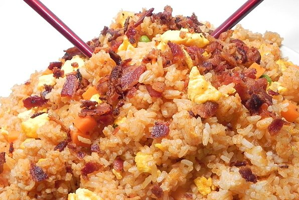

Fried Rice with Bacon and Sriracha

Description:
Fried rice that is quick, easy, and very flavorful. This recipe has been requested so many times by my family and friends I finally decided to place it on here for all to enjoy. Happy cooking!
This is one of the best fried rice I have ever tasted. Perfect for a family gathering or a friendly gathering!
Ingredients:
- 1/2 cup frozen corn, thawed
- 1/2 cup frozen peas, thawed
- 1/4cup water, divided
- 3 eggs
- 1 teaspoon butter
- 3 slices bacon
- 2 tablespoons peanut oil
- 4 cups cooked medium-grain jasmine rice, cold
- 3 tablespoons sriracha sauce
- 2 tablespoons soy sauce
- 2 tablespoons fish sauce
Steps:
-
Mix corn, peas, and 1 tablespoon water in a microwave-safe bowl. Microwave on high until tender, about 2 minutes.
-
Whisk 1 tablespoon water and 1 egg together in a small bowl.
-
Melt butter in a wok or large skillet over medium heat. Pour in egg; cook until set, about 1 minute per side. Transfer cooked egg into to a plate and slice. Repeat with remaining 2 tablespoons water and remaining 2 eggs.
-
Place bacon in the wok and cook over medium-high heat, turning occasionally, until evenly browned, about 10 minutes. Drain bacon slices on paper towels and slice.
-
Reheat wok over high heat, about 1 minute. Swirl in oil; heat until it shimmers. Break up large clumps of rice with wet fingers to separate the grains. Add 2 handfuls of rice to the wok and cook, stirring constantly, until it stars to crisp up, about 1 minute. Transfer to a bowl. Repeat with remaining rice.
-
Reduce heat to medium; return all rice to the wok. Stir in sriracha sauce, soy sauce, and fish sauce until rice is well-coated and heated through, about 2 minutes. Add corn, peas, eggs, and bacon; toss together until combined, about 3 minutes.
Back to Homepage